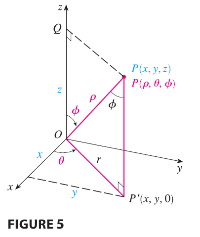
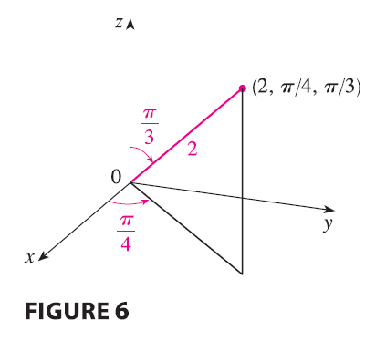

The relationship between rectangular and spherical coordinates can be
seen from Figure 5.

From triangles OPQ and OPP’ we have \[
z = \rho \cos \phi \qquad r = \rho \sin \phi
\] But \(x = r \cos \theta\) and
\(y = r \sin \theta\), so to convert
from spherical to rectangular coordinates, we use the equations
\[
x = \rho \sin \phi \cos \theta \qquad y = \rho \sin \phi \sin \theta
\qquad z = \rho \cos \phi \tag{1}
\]
Also, the distance formula shows that
\[
\rho^2 = x^2 + y^2 + z^2 \tag{2}
\]
We use this equation in converting from rectangular to spherical
coordinates.
EXAMPLE 1 The point \((2,
\pi/4, \pi/3)\) is given in spherical coordinates. Plot the point
and find its rectangular coordinates.

SOLUTION We plot the point in Figure 6. From
Equations 1 we have \[
x = \rho \sin \phi \cos \theta = 2 \sin \frac{\pi}{3} \cos \frac{\pi}{4}
= 2\left(\frac{\sqrt{3}}{2}\right)\left(\frac{1}{\sqrt{2}}\right) =
\sqrt{\frac{3}{2}}
\]\[
y = \rho \sin \phi \sin \theta = 2 \sin \frac{\pi}{3} \sin \frac{\pi}{4}
= 2\left(\frac{\sqrt{3}}{2}\right)\left(\frac{1}{\sqrt{2}}\right) =
\sqrt{\frac{3}{2}}
\]\[
z = \rho \cos \phi = 2 \cos \frac{\pi}{3} = 2\left(\frac{1}{2}\right) =
1
\] Thus the point \((2, \pi/4,
\pi/3)\) is \((\sqrt{3/2}, \sqrt{3/2},
1)\) in rectangular coordinates.
EXAMPLE 2 The point \((0,
2\sqrt{3}, -2)\) is given in rectangular coordinates. Find
spherical coordinates for this point.
SOLUTION From Equation 2 we have \[
\rho = \sqrt{x^2+y^2+z^2} = \sqrt{0 + 12 + 4} = 4
\] and so Equations 1 give \[
\cos \phi = \frac{z}{\rho} = \frac{-2}{4} = -\frac{1}{2} \qquad \phi =
\frac{2\pi}{3}
\]\[
\cos \theta = \frac{x}{\rho \sin \phi} = 0 \qquad \theta = \frac{\pi}{2}
\] (Note that \(\theta \neq
3\pi/2\) because \(y = 2\sqrt{3} >
0\).) Therefore spherical coordinates of the given point are
\((4, \pi/2, 2\pi/3)\).